Austin Alfred Deal 1876 - 1950
[ Home ] | [ Calendar ] | [ Surnames Index ] | [ Family History ]A cemetery caretaker, asylum farm foreman, butcher's assistant, cemetery caretaker and licensed victualler and the son of William Deal (a bailiff asylum farm) and Sarah Dale (a caretaker of bridge union workhouse)Austin Deal, the first cousin twice-removed on the father's side of Nigel Horne, was born in Chartham, Kent, England on Dec 23, 18761,2,3, was baptized there at St Mary on Feb 11, 1877 and married Emily Kenton (with whom he had 3 children: Eardley, William Richard and Hilda Mary) at St George's Church, Ramsgate, Kent, England on Jan 19, 19015.
Throughout his life, Austin lived in several places: at Asylum Farm Cottages in Chartham on Apr 3, 18816; at Asylum Cottages in Chartham on Apr 5, 18917; at 6 Dane Park Road in Ramsgate on Mar 31, 19019; at Kent County Lunatic Asylum in Chartham on Apr 2, 19118; at Railway Tavern in Chartham in Dec 1915; at Cemetery Lodge in Chartham on Sep 29, 19391; and at 5 Broadway Mansions, Fulham, London, England in 1950. He served in the military from Dec 10, 1915 to Oct 21, 1918 (regiment: Labour Corps; Service number: 41093 Invalided out with lumbago).
He died on Feb 20, 1950 in Fulham Hospital, Hammersmith, London4.
Parents
- William was born c. 1848
- Sarah Ann was born in Oct 1855
Children
- Eardley was born on Mar 25, 1902
- William Richard was born on Sep 10, 1904
- Hilda Mary was born on Sep 28, 1906
Citations
- 1939 Register - Findmypast (was recorded at this address)
- British Army Service Records - Findmypast
- England & Wales births 1837-2006 - Findmypast
- England & Wales deaths 1837-2007 - Findmypast
- England & Wales marriages 1837-2008 - Findmypast
- 1881 England, Wales & Scotland Census - Findmypast (was age 4 and the son of the head of the household)
- 1891 England, Wales & Scotland Census - Findmypast (was age 14 and the son of the head of the household)
- 1911 Census for England & Wales - Findmypast (was age 34 and the head of the household)
- 1901 England, Wales & Scotland Census - Findmypast (was age 24 and the head of the household)
Media
Austin Deal - WW1 Record - Page 1
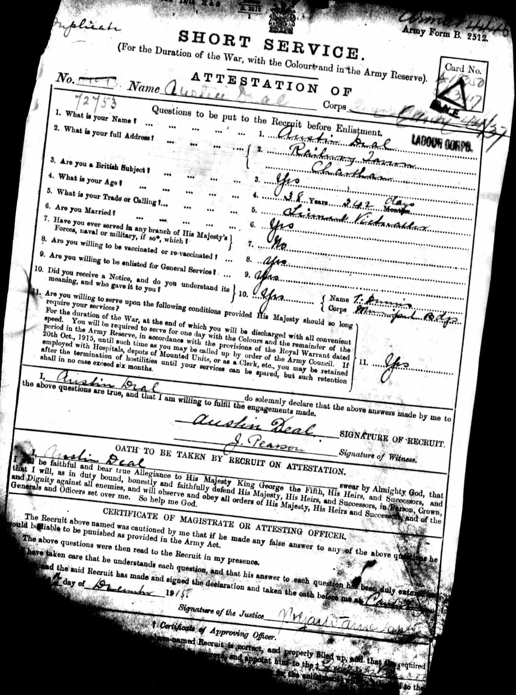
Austin Deal - WWI Record - Page 2
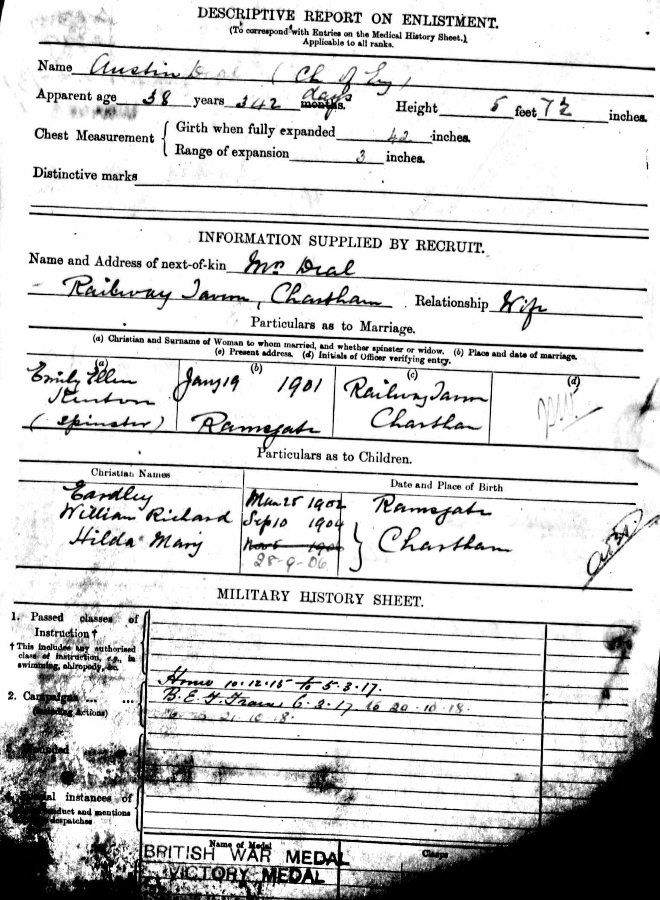
Austin Deal - WWI Record - Page 3
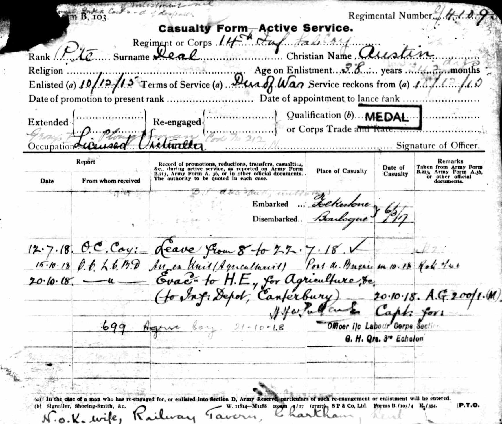
Austin Deal - WWI Service Record - page 4
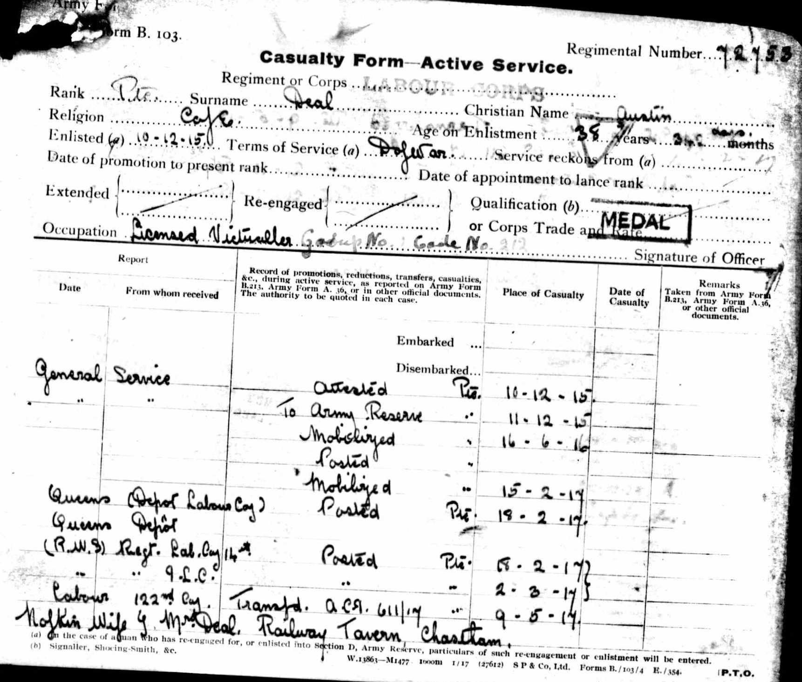
Austin Deal - WWI Record - Page 5
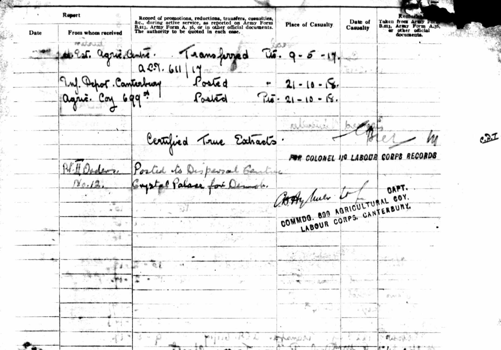
Austin Deal - WWI Record - Page 6
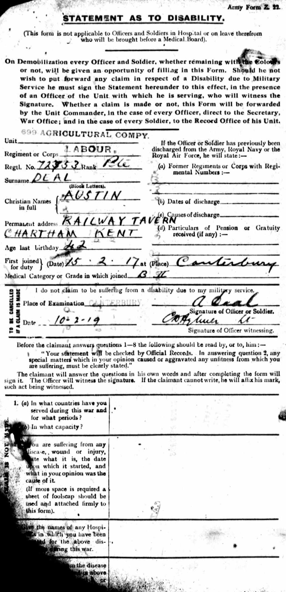
Austin Deal - WWI Record - Page 7
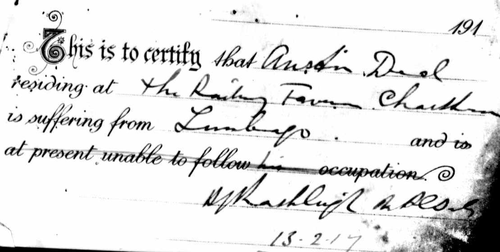
Austin Deal - WWI Record - Page 8
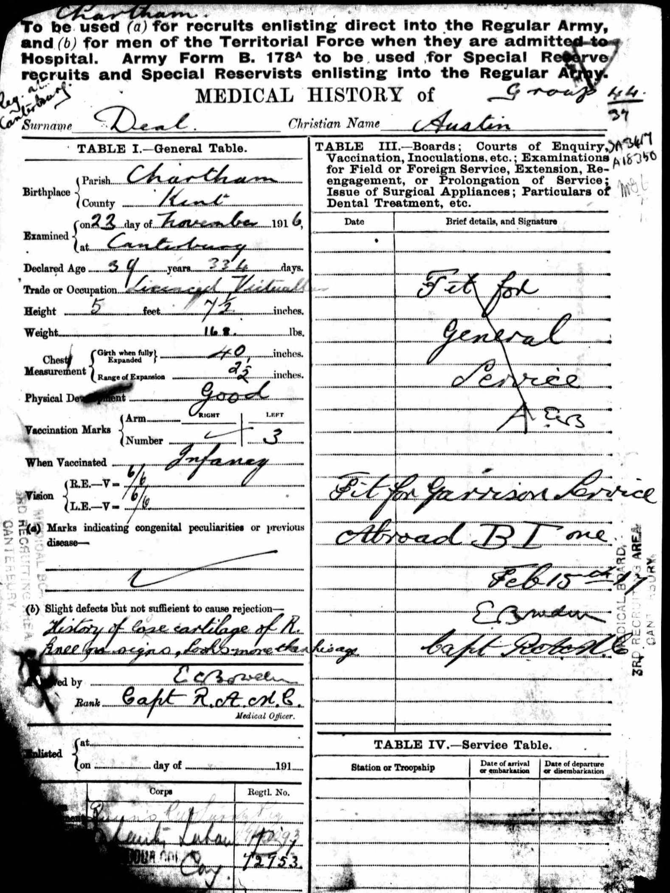
Austin Deal - WWI Record - Page 9
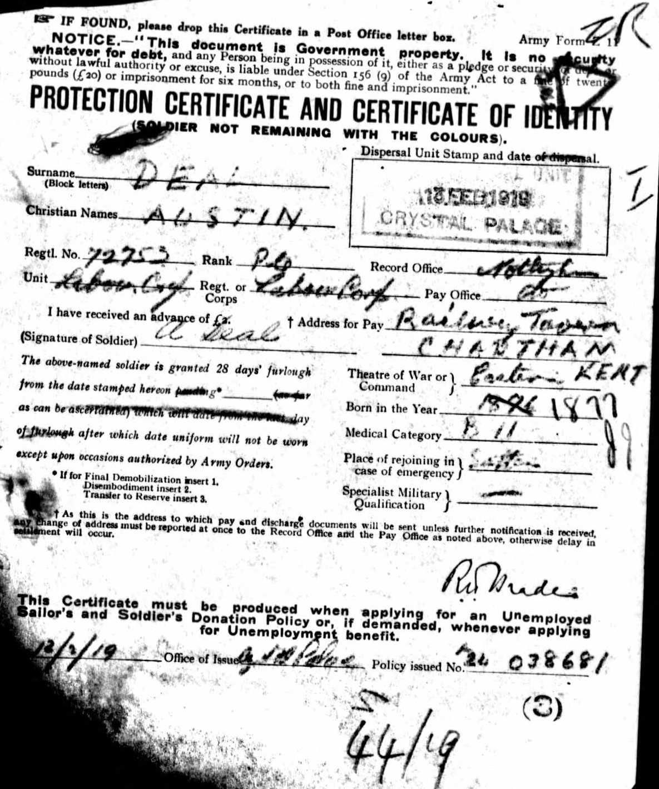
Austin Deal - Probate Record
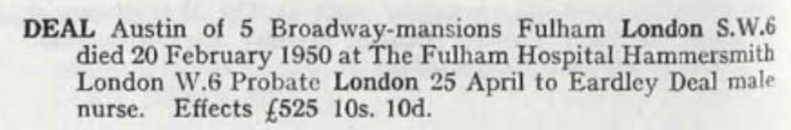
Whitstable Times and Herne Bay Herald January 9, 1915
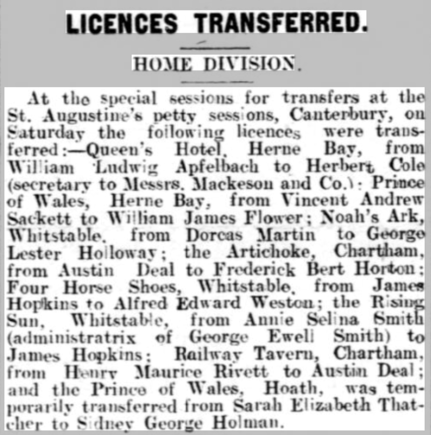
Whitstable Times and Herne Bay Herald 14 Sep 1929
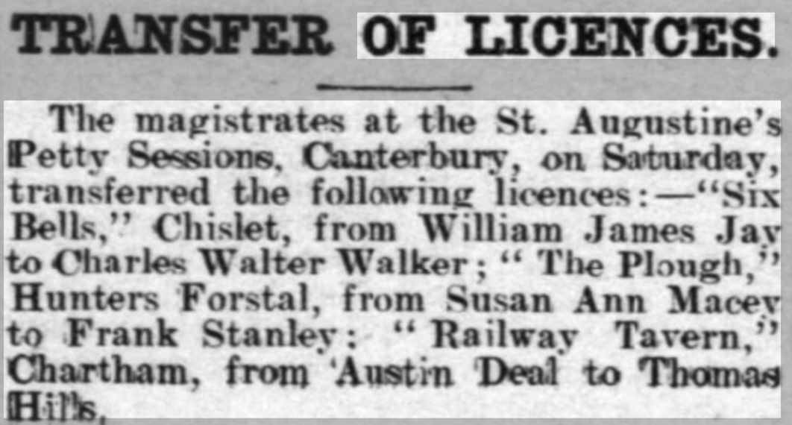
England & Wales births 1837-2006 - BMD/B/1877/1/AZ/000155/117
England & Wales marriages 1837-2008 - BMD/M/1901/1/AZ/000065/181
Kent, Canterbury Archdeaconry marriages 1538-1928 - GBPRS/CANT/M/97241239/1
England Marriages 1538-1973 - R_848242216
England & Wales deaths 1837-2007 - BMD/D/1950/1/AZ/000280/093
1881 England, Wales & Scotland Census - GBC/1881/0004706713
1891 England, Wales & Scotland Census - GBC/1891/0005720383
1939 Register Transcription - TNA-R39-1803-1803E-026-26
1901 England, Wales & Scotland Census Transcription - GBC-1901-0007455633
1911 England, Wales & Scotland Census Transcription - GBC-1911-RG14-04308-0064-7
England Births & Baptisms 1538-1975 - R_885423786
Kent Baptisms - GBPRS/CANT/B/96194053
British Army Service Records - GBM/WO363-4/7295355/24/515
Family Tree
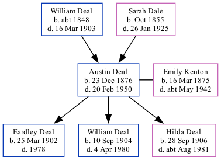Generated by ged2site. Last updated on Nov 13, 2024